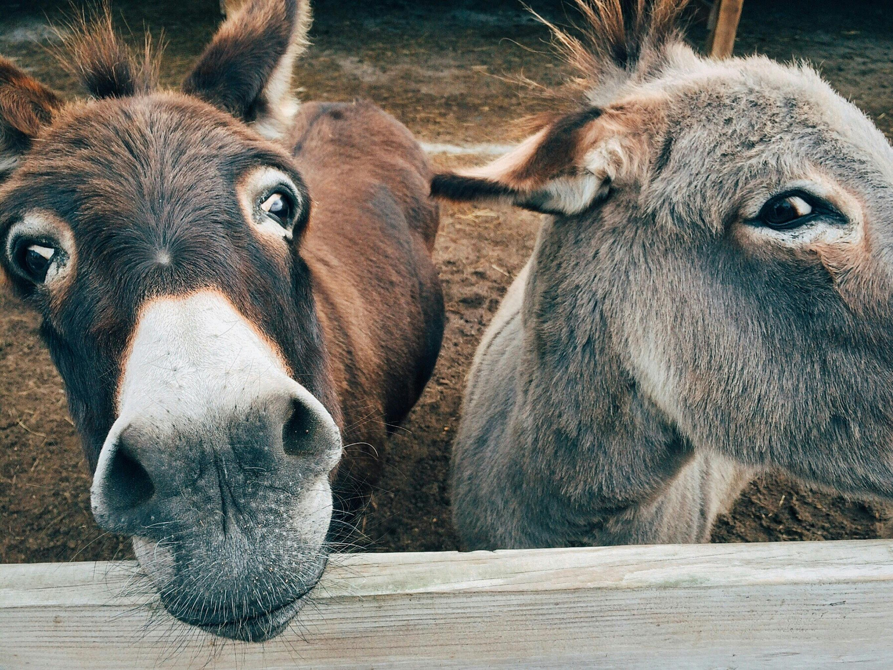

Nos sentimos orgullosos de nuestros logros.
Ya estamos acostumbrados a tratar con animales, hemos salvados a tantos y manejado la situacion de cada vida. En nuestra intancia estamos orgullosos de nosotros mismos despues de salvar una o mas vidas de estos animales, esto pasa seguido, para no decir que todos los dias-
Hemos recibidos varios premios, logros y halagos de tanta gente y otras fundaciones, esto quiere decirle al mundo que puede confiar en nosotros, ya sea dejando su mascota en adopcion o cuando ellos van a adoptar nuestros animales
El equipo de medicos, profesionales en su trabajo, sienten que cambian el mundo tanto para ellos y para el mundo de aquellos animales. Nunca nos cansamos